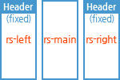
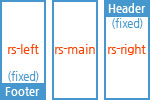
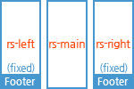
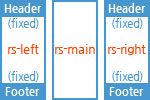
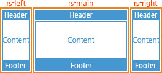
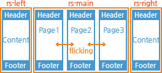
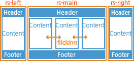

<p>
아래 이미지를 클릭하여 Template 페이지를 열고, 소스를 copy&paste하여 적용한다.<br />
헤더, 컨텐츠, 풋터 부분을 필요한 내용으로 수정한다.
</p>

<h4> jindo.m.PageLayoutUI을 main으로 사용하지 않는 경우</h4>

<ul class="tumb_list">
	<li class="tumb">
		<a href="../../demo/jindo.m.RevealSidebarUI/template_LeftTop_RightTop.html" target="_blank">Left 상단 고정, Right 상단 고정</a>
	</li>
	<li class="tumb">
		<a href="../../demo/jindo.m.RevealSidebarUI/template_LeftTop_RightBottom.html" target="_blank">Left 상단 고정, Right 하단 고정</a>
	</li>
	<li class="tumb">
		<a href="../../demo/jindo.m.RevealSidebarUI/template_LeftBottom_RightTop.html" target="_blank">Left 하단 고정, Right 상단 고정</a>
	</li>
	<li class="tumb">
		<a href="../../demo/jindo.m.RevealSidebarUI/template_LeftBottom_RightBottom.html" target="_blank">Left 하단 고정, Right 하단 고정</a>
	</li>
	<li class="tumb">
		<a href="../../demo/jindo.m.RevealSidebarUI/template_LeftTopBottom_RightTopBottom.html" target="_blank">Left 상,하단 고정, Right 상,하단 고정</a>
	</li>
</ul>

<!--h4> 2. jindo.m.PageLayoutUI을 main으로 사용하는 경우</h4>

<ul class="tumb_list">
	<li class="tumb">
		<a href="../../demo/jindo.m.RevealSidebarUI/template_type1.html" style="width:100%" target="_blank">main이 싱글 PageLayoutUI 형태</a>
	</li>
	<li class="tumb">
		<a href="../../demo/jindo.m.RevealSidebarUI/template_type2.html" style="width:100%" target="_blank">main이 멀티 PageLayoutUI 형태</a>
	</li>
	<li class="tumb">
		<a href="../../demo/jindo.m.RevealSidebarUI/template_type3.html" style="width:100%" target="_blank">main이 싱글 다중컨텐츠 PageLayoutUI 형태</a>
	</li>
</ul-->